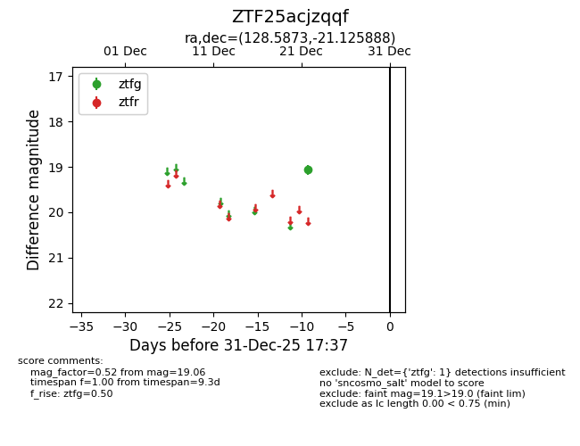
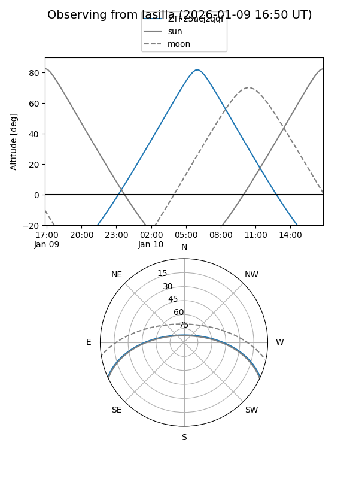
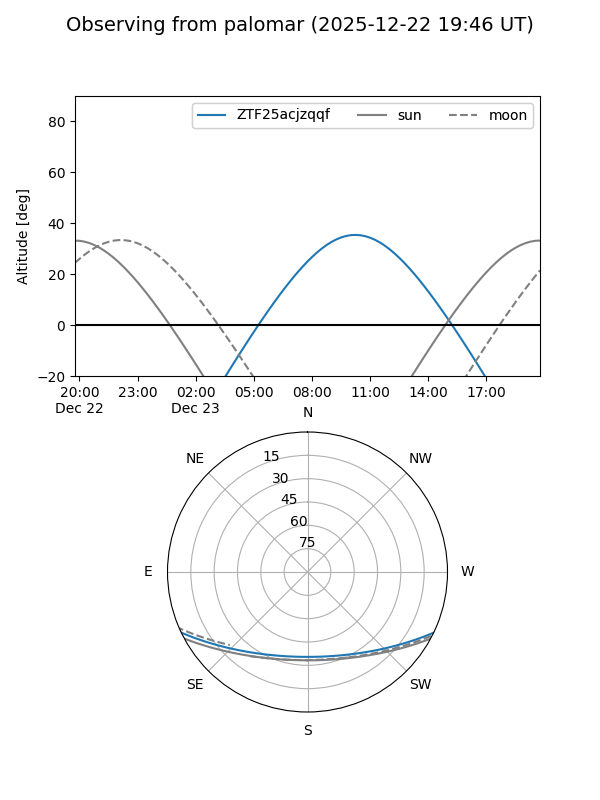

ZTF25acjzqqf
Target ZTF25acjzqqf at 2025-12-22 20:23
Aliases and brokers:
FINK: fink-portal.org/ZTF25acjzqqf
Lasair: lasair-ztf.lsst.ac.uk/objects/ZTF25acjzqqf
ALeRCE: alerce.online/object/ZTF25acjzqqf
alt names
ZTF25acjzqqf (ztf,fink_ztf)
Coordinates:
equatorial (ra, dec) = 128.5873,-21.12589
equatorial (HMS+DMS) = 08:34:20.96,-21:07:33.20
galactic (l, b) = (243.9565,+11.30493)
Flags:
Photometry:
last ztfg=19.06
1 ztfg detections
Lightcurve

Visibility


Additional plots